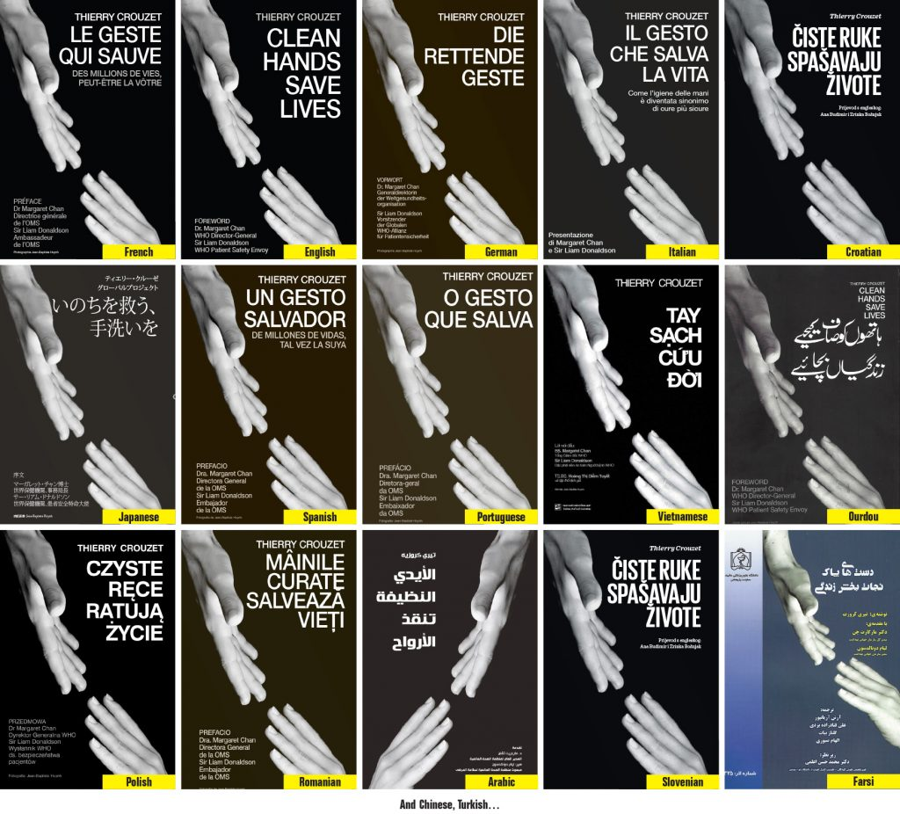
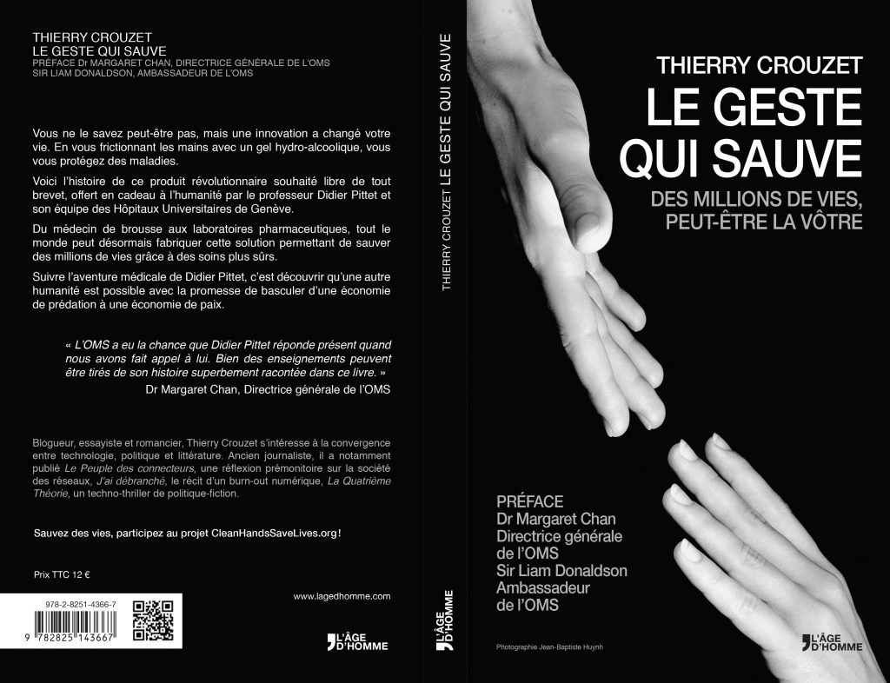
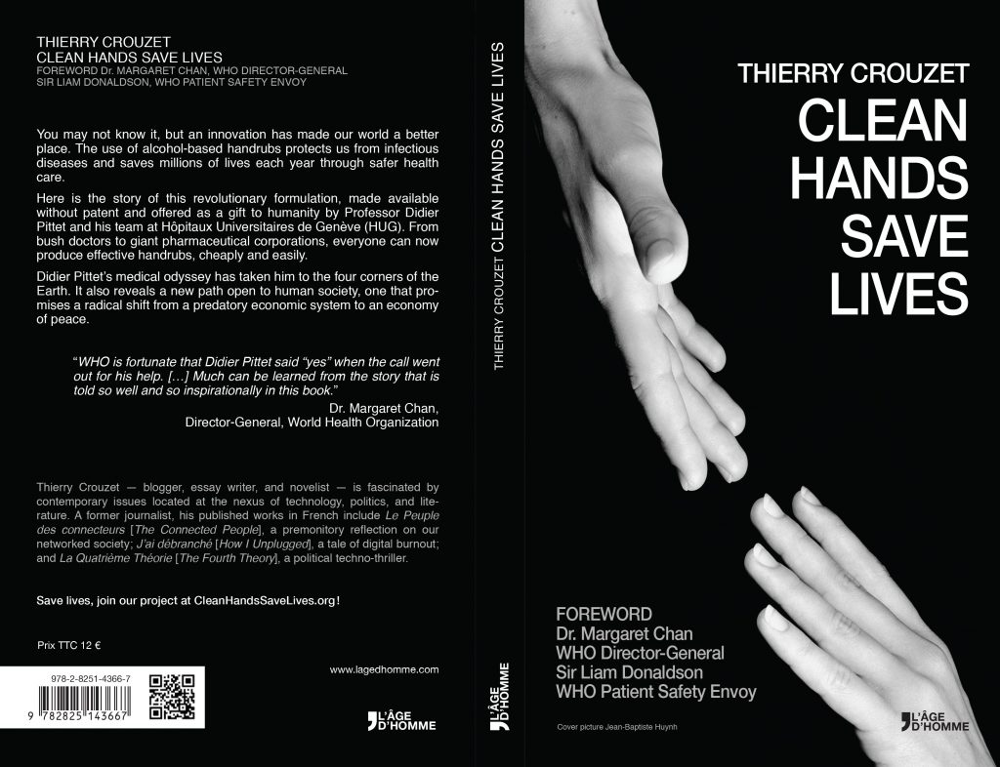
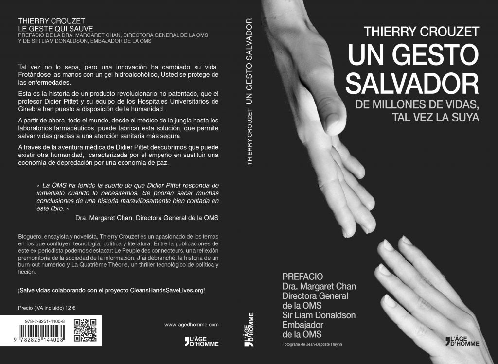
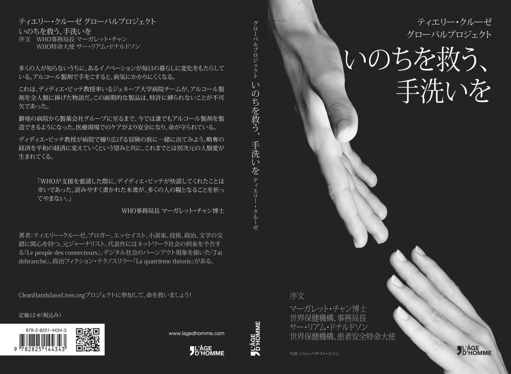
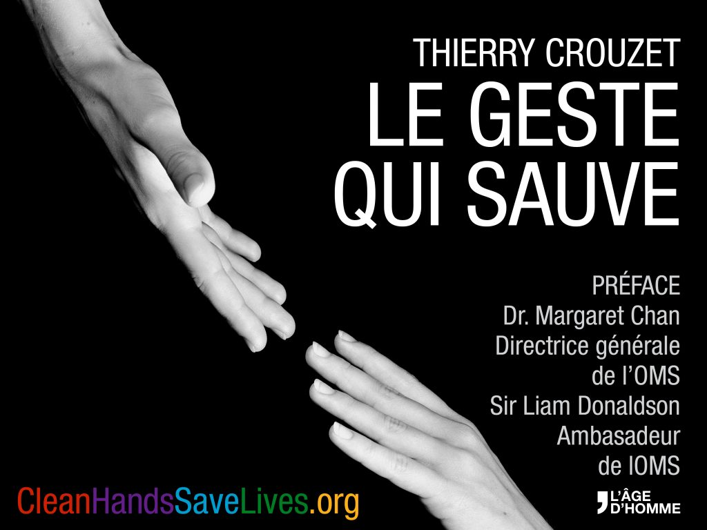
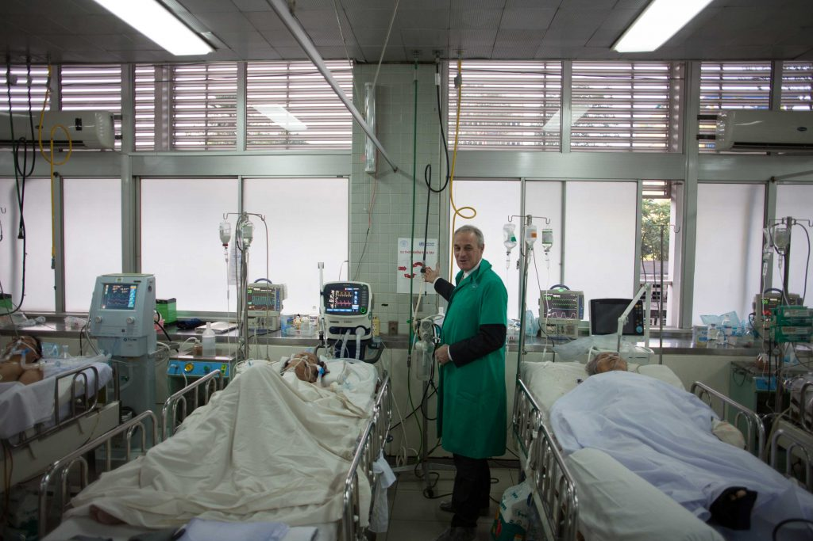
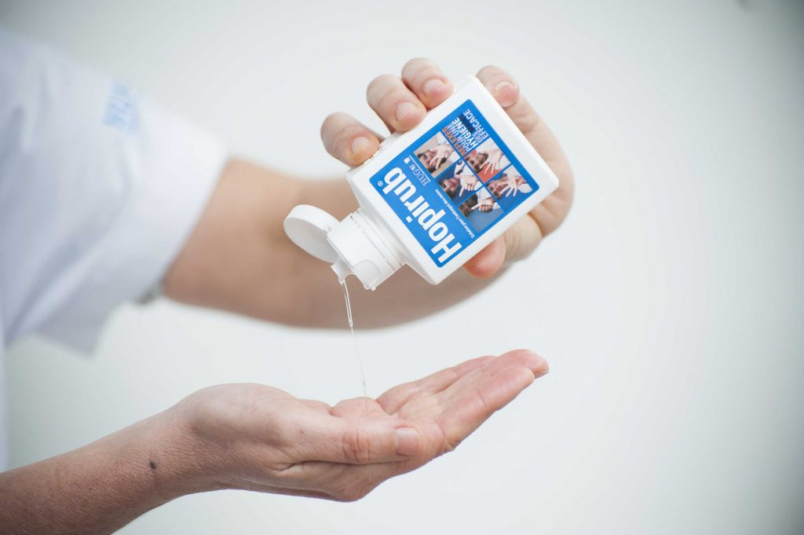

Visuels
[tcrouzet function="tcrouzet_sousmenu" menu="pittet"]

Traductions

© Federal Studio (ref
CF069556)

© Federal Studio (ref
CF069684)

© Federal Studio (ref CF069861
& CF069905)

Couvertures

Le geste qui sauve

Clean Hands Save Lives
Die Rettende Geste

Un Gesto Salvador
O gesto que salva

Version japonaise
Diapositive

Le Geste qui sauve
Didier Pittet
Didier Pittet

Didier au Vietnam

Flacon

Les livres papier sont sortis avec des bandeaux aux couleurs des sponsors.
Sommaire | Texte publié samedi 29 mars 2014